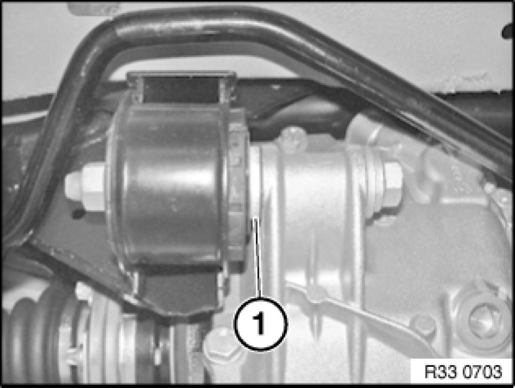
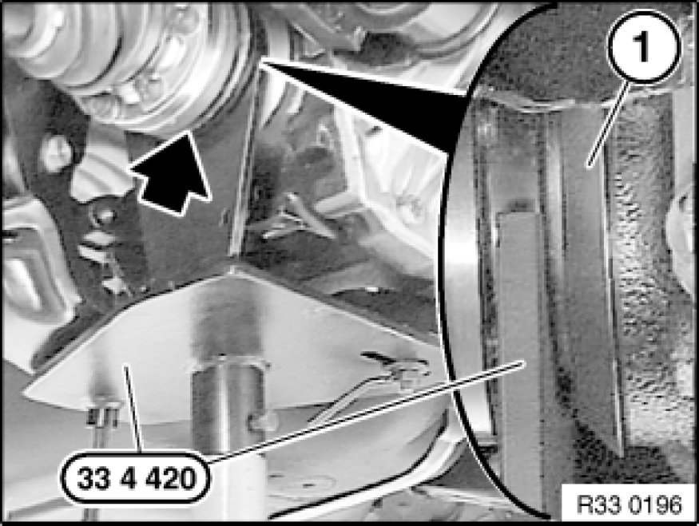
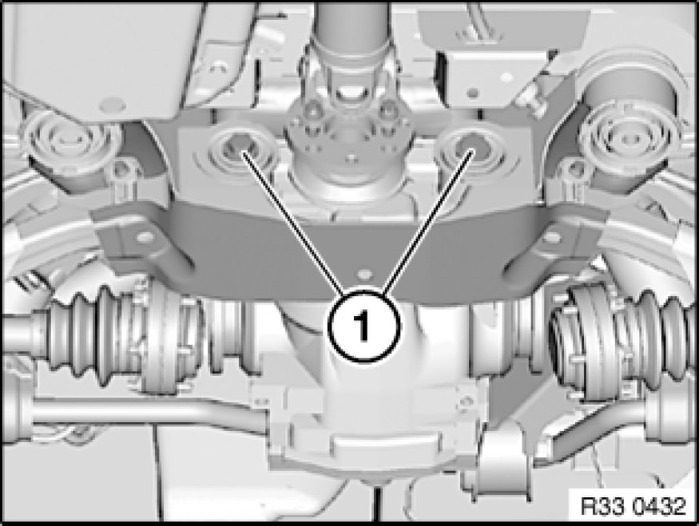
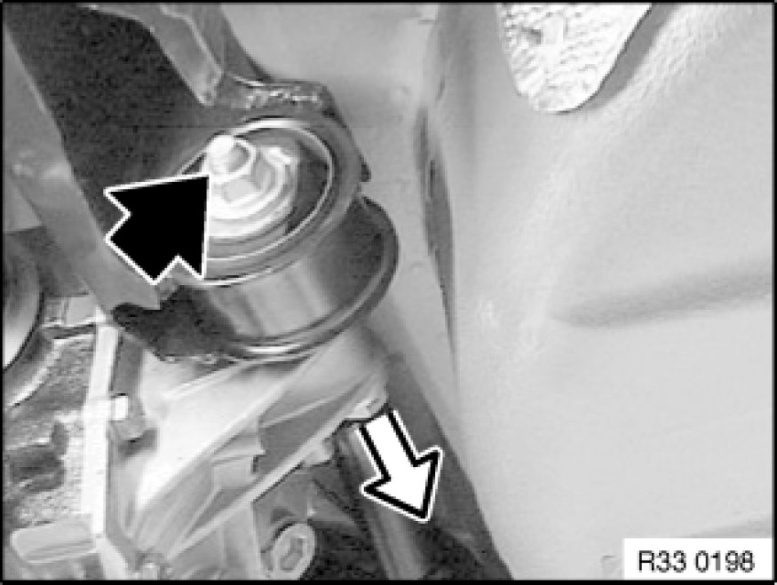
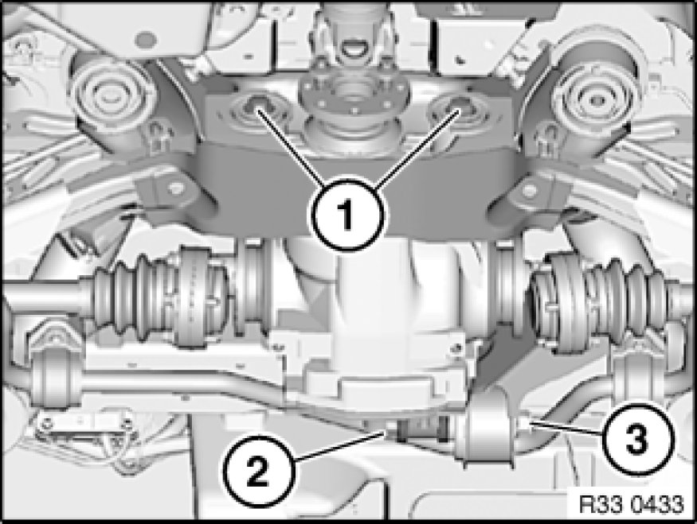

Removing and Installing/Replacing Rear Differential
33 10 010 - Removing and installing/replacing rear differential

Special tools required:
- 33 4 420 33 4 420 Support

Important!
Risk of damage!
Use only approved rear differential oils!

Diesel up to build date 01/07, petrol/gasoline engine:
Important!
Risk of damage!
Reinstall shim (1).
If the rubber mount has a clearly protruding inner sleeve on one side, a shim does not have to be fitted.

Necessary preliminary tasks:
- Lower exhaust system in rear area Service and Repair
- Remove output shaft from rear differential at both ends and tie back
- Remove propeller shaft from rear differential Removing and Installing Propeller Shaft (Cardan Universal Joint) Completely and tie back

Warning!
Danger to life!
Car may tilt off lifting platform if the workshop jack is incorrectly handled.
After supporting components, make sure that:
- the vehicle can no longer be raised or lowered
- the vehicle does not lift off the locating plates on the lifting platform

Remove compression strut Removing and Installing/Replacing Compression Strut for Rear Axle Carrier and insert bolts for rear axle carrier at front until contact is made.
Support rear differential with workshop jack and special tool 33 4 420 33 4 420 Support.
Important!
Observe gap between special tool 33 4 420 33 4 420 Support and dust plates (1).
To avoid grinding noises, make sure the dust plates (1) are not damaged (e.g. bent).

Release screws (1).

Unfasten nut.
Unscrew bolt to center of car; if necessary, remove spacer.
Slowly lower workshop jack and tip rear differential out towards rear.
Important!
Adhere to the following installation sequence in order to prevent distortion of the rear differential during installation and thereby avoid potential complaints about noise.

Installation sequence:
1. Install rear differential with workshop jack and special tool 33 4 420 33 4 420 Support.
2. Insert bolts (1) (do not tighten down)
3. Insert bolt (2); if necessary, fit spacer
4. Replace and screw on nut (3) (do not tighten down)
5. Lower workshop jack
6. Install compression strut Removing and Installing/Replacing Compression Strut for Rear Axle Carrier
7. Tighten down screws (1)
Tightening torque 33 17 1AZ [1][2]Differential Mount.
8. Tighten nut (3)
Tightening torque 33 17 1AZ [1][2]Differential Mount.
After installation:
- Check rear differential oil level Checking/Topping Up Oil Level in Rear Differential, correct if necessary